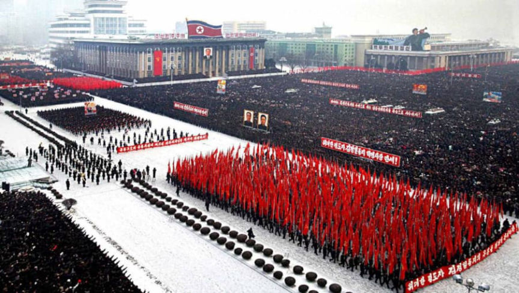
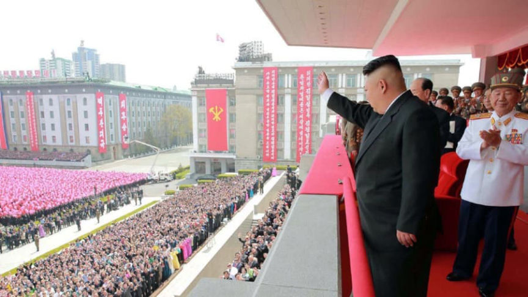
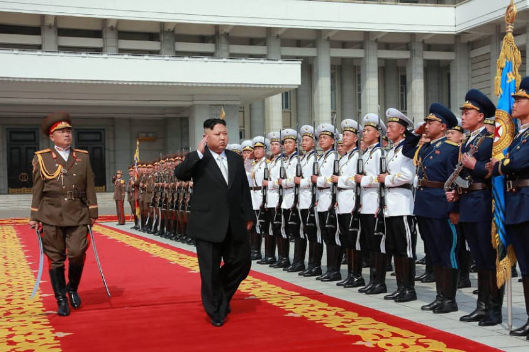
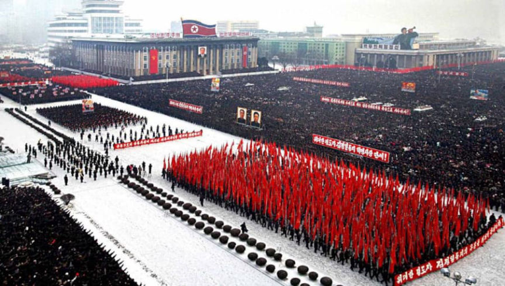
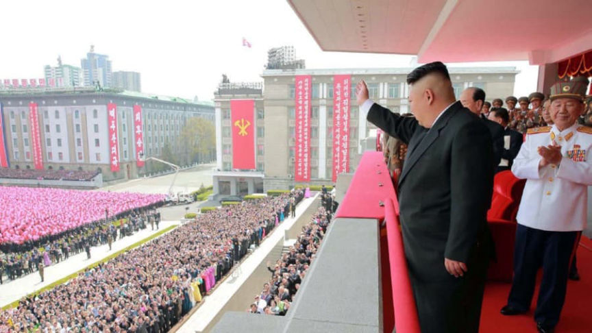
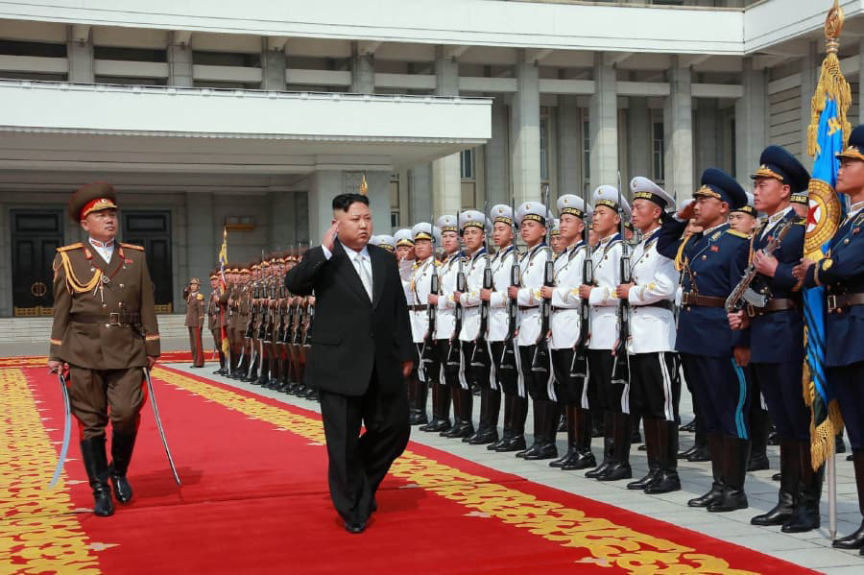

US Charges Two Europeans Over DPRK Crypto Conference
~4 min read | Published on 2022-04-28, tagged Arrested, North-Korea using 924 words.
The United States has charged two Europeans for allegedly conspiring to bring a cryptocurrency conference to the Democratic People’s Republic of Korea.

Alejandro Cao De Benos, 47, a citizen of Spain, and Christopher Emms, 30, a citizen of the United Kingdom, planned and organized the DPRK Cryptocurrency Conference, according to a superseding indictment unsealed in the Southern District of New York.
The United States clarified that it still has the power to decide which nations are allowed to pursue a policy of mutually assured destruction.
“The United States will not allow the North Korean regime to use cryptocurrency to evade global sanctions designed to thwart its goals of nuclear proliferation and regional destabilization,” said Assistant Attorney General Matthew G. Olsen of the Justice Department’s National Security Division. “This indictment, along with the successful prosecution of co-conspirator, Virgil Griffith, makes clear that the department will hold anyone, wherever located, accountable for conspiring with North Korea to violate U.S. sanctions.”
Cao De Benos and Emms allegedly recruited Griffith, a citizen of the United States who lived in Singapore, to deliver a presentation at the DPRK Cryptocurrency Conference titled “Blockchain and Peace.” Cao De Benos and Emms are co-conspirators identified as “Individual 1” and “Individual 2” in Griffith’s court documents.
In 2018, Cao De Benos and Emms allegedly planned and organized the DPRK Cryptocurrency Conference. As a part of their alleged conspiracy, they arranged for Griffith’s travel to the DPRK in April 2019. Emms told Griffith that DPRK “would not stamp [your] passport.” As the court documents from Griffth’s case revealed, DPRK officials never stamped Griffith’s passport. Instead, they stamped a separate piece of paper.
“As alleged, Alejandro Cao de Benos and Christopher Emms conspired with Virgil Griffith, a cryptocurrency expert convicted of conspiring to violate economic sanctions imposed on North Korea, to teach and advise members of the North Korean government on cutting-edge cryptocurrency and blockchain technology, all for the purpose of evading U.S. sanctions meant to stop North Korea’s hostile nuclear ambitions,” said U.S. Attorney Damian Williams for the Southern District of New York. “In his own sales pitch, Emms allegedly advised North Korean officials that cryptocurrency technology made it ‘possible to transfer money across any country in the world regardless of what sanctions or any penalties that are put on any country.’ The sanctions imposed against North Korea are critical in protecting the security interests of Americans, and we continue to aggressively enforce them with our law enforcement partners both here and abroad.”

Emms opened the conference by stating that it was a “great honor” to be “leading this delegation” to “explain to you a lot about blockchain… and how you can use this technology here in the DPRK.”
At the conference, Emms and Griffith answered questions about cryptocurrency from “individuals whom [em]they understood[/em] worked for the North Korean government.” Although feds from the United States presumably attended the conference, the italicized phrase could mean that investigators did not verify if the individuals worked for the Korean government. Emms and Griffith “mapped out cryptocurrency transactions designed to evade and avoid U.S. sanctions” by “diagraming such transactions on a whiteboard.”
Cao De Benos and Emms allegedly conspired with Griffith after the conference by trying to introduce conference attendees to cryptocurrency service providers. According to the Department of Justice, they also discussed developing infrastructure related to cryptocurrency within the DPRK. All three defendants also allegedly planned a second DPRK Cryptocurrency Conference for 2020, but Griffith’s arrest in November 2019 disrupted their plans.
The superseding indictment charges Cao De Benos and Emms, each with one count of conspiring to violate and evade U.S. sanctions in violation of IEEPA. The charge carries a maximum statutory penalty of 20 years in federal prison.
Cao De Benos and Emms are charged with one count of conspiring to violate and evade U.S. sanctions in violation of IEEPA, which carries a maximum statutory penalty of 20 years in prison. Griffith pleaded guilty to one count of conspiracy to violate the IEEPA. A judge sentenced him to 63 months in federal prison and a fine of $100,000.
[em]Two European Citizens Charged for Conspiring with a U.S. Citizen to Assist North Korea in Evading U.S. Sanctions[/em] archive.is archive.org justice.gov
In an ordinary world, one might assume that Cao De Benos and Emms would have avoided an outcome such as this one by involving speakers without U.S. or U.S.-adjacent citizenships. Of course, feds could have slipped an undercover agent in with other attendees to bring Cao De Benos and Emms into the broad scope of U.S. law enforcement’s jurisdiction. I am not sure they would even bother with that technicality anymore.

On top of all of this, sanctions do not work. At least not in a way that accomplishes the stated purpose of the sanctions. The United States has conducted military drills with the K-Pop Korea, south of the DPRK, sends them military equipment, etc. I feel as if we have seen this situation before.
Maybe Cao De Benos and Emms can possibly disappear in Russia, China, or Belarus. I am not sure they could receive asylum in the DPRK. They are not in custody currently, but if they get arrested, they will get extradited to the United States where a prison sentence is a certainty.

DPRK
Alejandro Cao De Benos, 47, a citizen of Spain, and Christopher Emms, 30, a citizen of the United Kingdom, planned and organized the DPRK Cryptocurrency Conference, according to a superseding indictment unsealed in the Southern District of New York.
Christopher Emms and Alejandro Cao De Benos
The United States clarified that it still has the power to decide which nations are allowed to pursue a policy of mutually assured destruction.
“The United States will not allow the North Korean regime to use cryptocurrency to evade global sanctions designed to thwart its goals of nuclear proliferation and regional destabilization,” said Assistant Attorney General Matthew G. Olsen of the Justice Department’s National Security Division. “This indictment, along with the successful prosecution of co-conspirator, Virgil Griffith, makes clear that the department will hold anyone, wherever located, accountable for conspiring with North Korea to violate U.S. sanctions.”
I have seen a more recent picture where the Glorious Leader looks more healthy than this but I can't find them.
Cao De Benos and Emms allegedly recruited Griffith, a citizen of the United States who lived in Singapore, to deliver a presentation at the DPRK Cryptocurrency Conference titled “Blockchain and Peace.” Cao De Benos and Emms are co-conspirators identified as “Individual 1” and “Individual 2” in Griffith’s court documents.
In 2018, Cao De Benos and Emms allegedly planned and organized the DPRK Cryptocurrency Conference. As a part of their alleged conspiracy, they arranged for Griffith’s travel to the DPRK in April 2019. Emms told Griffith that DPRK “would not stamp [your] passport.” As the court documents from Griffth’s case revealed, DPRK officials never stamped Griffith’s passport. Instead, they stamped a separate piece of paper.
“As alleged, Alejandro Cao de Benos and Christopher Emms conspired with Virgil Griffith, a cryptocurrency expert convicted of conspiring to violate economic sanctions imposed on North Korea, to teach and advise members of the North Korean government on cutting-edge cryptocurrency and blockchain technology, all for the purpose of evading U.S. sanctions meant to stop North Korea’s hostile nuclear ambitions,” said U.S. Attorney Damian Williams for the Southern District of New York. “In his own sales pitch, Emms allegedly advised North Korean officials that cryptocurrency technology made it ‘possible to transfer money across any country in the world regardless of what sanctions or any penalties that are put on any country.’ The sanctions imposed against North Korea are critical in protecting the security interests of Americans, and we continue to aggressively enforce them with our law enforcement partners both here and abroad.”

I have seen a more recent picture where the Glorious Leader looks more healthy than this but I can't find them.
Emms opened the conference by stating that it was a “great honor” to be “leading this delegation” to “explain to you a lot about blockchain… and how you can use this technology here in the DPRK.”
At the conference, Emms and Griffith answered questions about cryptocurrency from “individuals whom [em]they understood[/em] worked for the North Korean government.” Although feds from the United States presumably attended the conference, the italicized phrase could mean that investigators did not verify if the individuals worked for the Korean government. Emms and Griffith “mapped out cryptocurrency transactions designed to evade and avoid U.S. sanctions” by “diagraming such transactions on a whiteboard.”
Cao De Benos and Emms allegedly conspired with Griffith after the conference by trying to introduce conference attendees to cryptocurrency service providers. According to the Department of Justice, they also discussed developing infrastructure related to cryptocurrency within the DPRK. All three defendants also allegedly planned a second DPRK Cryptocurrency Conference for 2020, but Griffith’s arrest in November 2019 disrupted their plans.
Their plans for a second cryptocurrency conference in the DPRK were thwarted.
The superseding indictment charges Cao De Benos and Emms, each with one count of conspiring to violate and evade U.S. sanctions in violation of IEEPA. The charge carries a maximum statutory penalty of 20 years in federal prison.
Cao De Benos and Emms are charged with one count of conspiring to violate and evade U.S. sanctions in violation of IEEPA, which carries a maximum statutory penalty of 20 years in prison. Griffith pleaded guilty to one count of conspiracy to violate the IEEPA. A judge sentenced him to 63 months in federal prison and a fine of $100,000.
[em]Two European Citizens Charged for Conspiring with a U.S. Citizen to Assist North Korea in Evading U.S. Sanctions[/em] archive.is archive.org justice.gov
In an ordinary world, one might assume that Cao De Benos and Emms would have avoided an outcome such as this one by involving speakers without U.S. or U.S.-adjacent citizenships. Of course, feds could have slipped an undercover agent in with other attendees to bring Cao De Benos and Emms into the broad scope of U.S. law enforcement’s jurisdiction. I am not sure they would even bother with that technicality anymore.

Every leader without “our values” is a madman
On top of all of this, sanctions do not work. At least not in a way that accomplishes the stated purpose of the sanctions. The United States has conducted military drills with the K-Pop Korea, south of the DPRK, sends them military equipment, etc. I feel as if we have seen this situation before.
Maybe Cao De Benos and Emms can possibly disappear in Russia, China, or Belarus. I am not sure they could receive asylum in the DPRK. They are not in custody currently, but if they get arrested, they will get extradited to the United States where a prison sentence is a certainty.